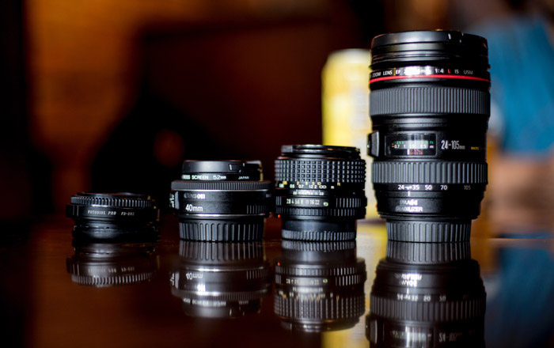
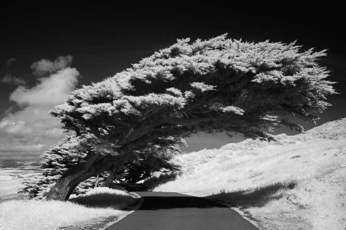

he history of black and white photography goes back to the invention of photography in 1826. Colour photography was invented only 100 years after. Every photograph that you can think of, has the potential to be black and white. It only depends on your imagination and a few key skills.
This post will show you how to make the most of black and white photography.
Tones and contrast are stronger in black and white. Black and white can bring out emotions stronger than colors. This is because it removes distractions from a portrait. Color can make you focus on a particular feeling, like warm or cold.
Some specific street photography cameras have fixed lenses. These include the Ricoh GRII 28 mm view. You can change these lenses.
If your camera has the ability to change its lens, what would your focus be and how much of the scene would you like to see?
Photographers using DSLRs choose anything from wide-angle lenses, such as 11-16 mm, to moderate telephoto lenses, such as 85 mm.
Camera lens filters help you make the most of your landscape, architectural, or long exposure photography.
Some have the capacity to stop some of the light so that a long-exposure is possible. Others add detail into otherwise overexposed skies and well-lit areas. Black and white photography is no different, and colored filters can help enhance it.
The standard Polarising, UV and ND/GND filters are common in color photography. Yet they are also very useful in black and white.
These filters help you bring the most out of the clouds and setting the atmosphere. They also allow you to take stunning long-exposure images
The first black and white analogue film was available in 1889. This means almost 130 years of research and development going into the film that you can buy today.
They shoot in as many different scenarios as you can think of, at many different ISO speeds. There are also specialist items, such as infra-red.
The downside is that you might want to digitalize the images. You will need a scanner for this, at an extra cost.
Many enthusiasts and professionals still use film in their photography. The film has qualities like grains and tones still unmatched by the world of digital photography.
